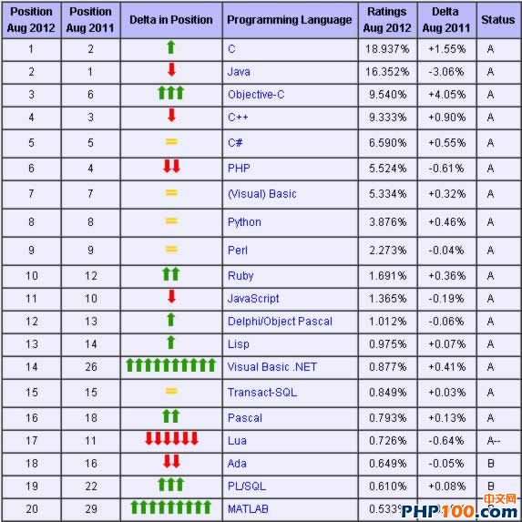
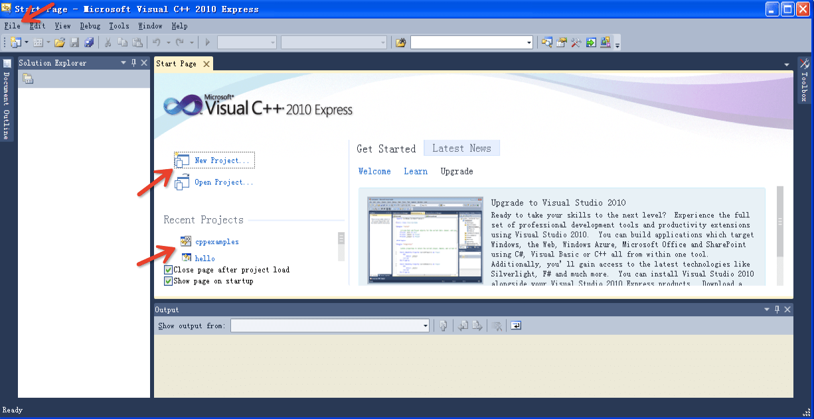
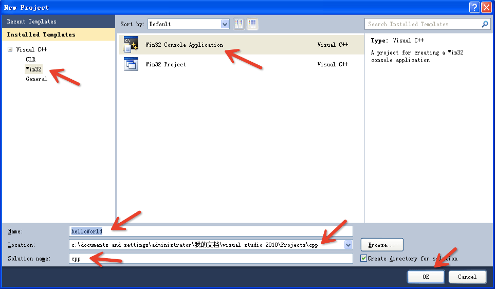
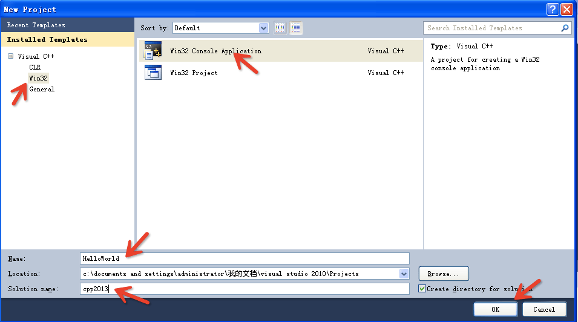
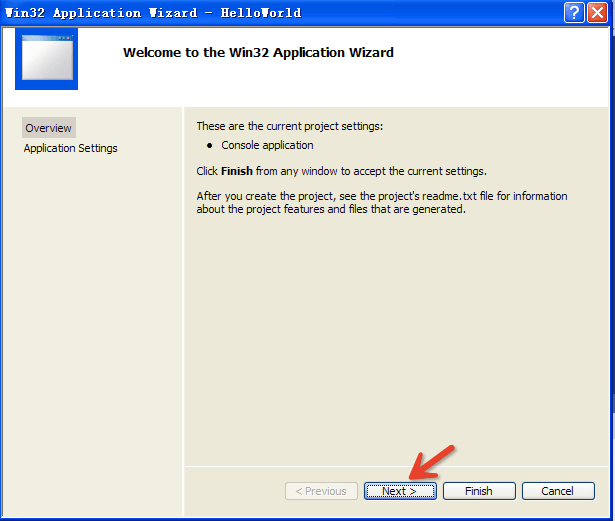
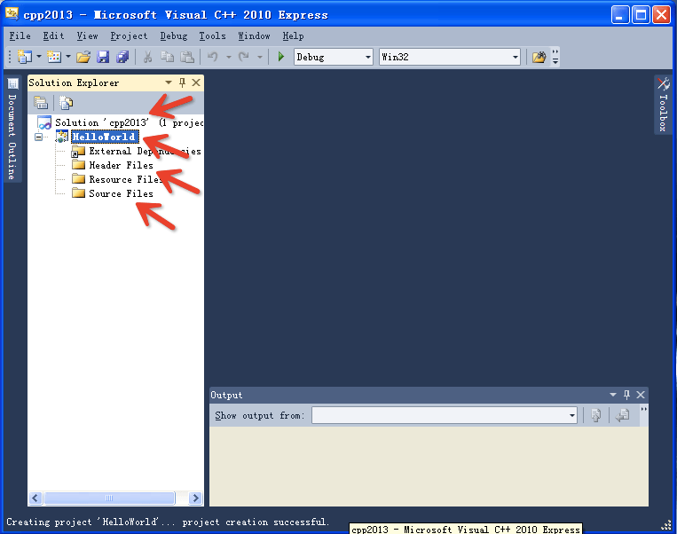
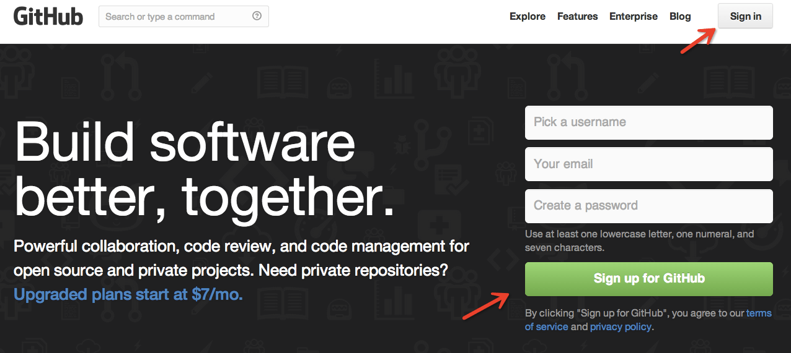
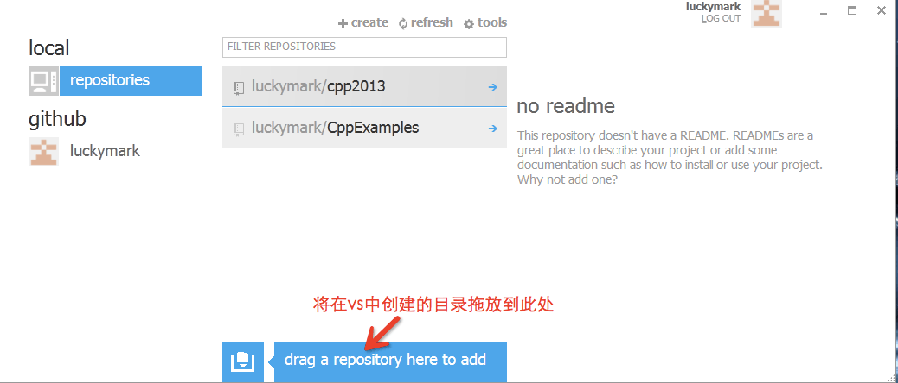
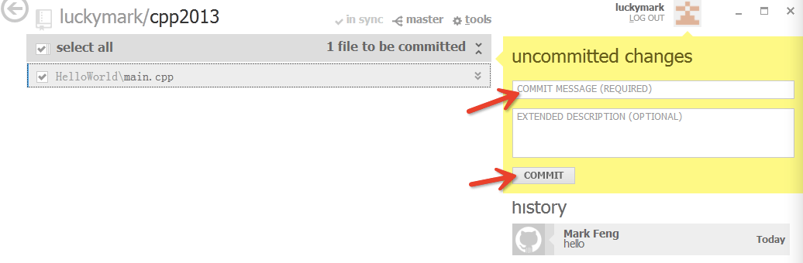
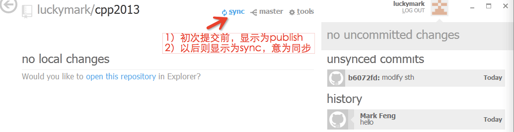

<!--
<User>
  <luckystar></luckystar>
</User>
<Date>
  <13-9-3></13-9-3>
</Date>
<Time>下午10:04</Time>
--><!DOCTYPE html>
<html lang="en"></html>
<head>
  <meta charset="utf-8">
  <title>chap1 HelloWorld</title>
  <meta name="author" content="俸志刚">
  <meta name="apple-mobile-web-app-capable" content="yes">
  <meta name="apple-mobile-web-app-status-bar-style" content="black-translucent">
  <meta name="viewport" content="width=device-width, initial-scale=1.0, maximum-scale=2.0, user-scalable=yes">
  <link rel="stylesheet" href="css/reveal_bigFont.css">
  <link id="theme" rel="stylesheet" href="css/theme/simple.css">
  <link rel="stylesheet" href="../lib/bootstrap/css/bootstrap.min.css">
  <body>
    <div class="reveal">
      <div class="slides">
        <section>
          <h1>C++</h1>
          <ul>
            <li>俸志刚（计算机学院 嵌入式软件工程中心）</li><br>
            <li class="fragment">Phone: 186 2800 2616</li><br>
            <li class="fragment">Email: luckyZhiGang@gmail.com</li><br>
            <li class="fragment">WebSite:<a href="https://github.com/luckymark/CppExamples">https://github.com/luckymark/CppExamples</a></li>
          </ul>
        </section>
        <section>
          <section>
            <h2>C++长什么样子？</h2>
            <p>HelloWorld.cpp</p>
            <pre>#include "iostream"

using namespace std;

int main()
{
    cout&lt&lt"Hello world!"&lt&ltendl&lt&lt"I'm Mark.";
    
    return 0;
}</pre>
            <p class="fragment">新的KeyWords（关键字）:using namespace</p>
          </section>
          <section>
            <p>Clock.cpp</p>
            <pre>class Clock{
public:
    void setTime(int h,int m,int s){
        this->h = h;
        this->m = m;
        this->s = s;
    }
private:
    int h,m,s;
};</pre>
          </section>
          <section>
            <p>Clock.cpp</p>
            <pre>int main()
{
    Clock c;
    c.setTime(12,30,0);
    return 0;
}</pre>
            <p class="fragment">新的KeyWords（关键字）:class public private</p>
          </section>
        </section>
        <section>
          <h2>C++可以做什么？</h2>
          <ul>
            <li class="fragment">操作系统（例如：Windows）</li><br>
            <li class="fragment">大型游戏</li><br>
            <li class="fragment">系统级的大型软件（例如：SQLServer、Chrome浏览器、C++自己的编译器）</li><br>
            <li class="fragment">工具软件（例如：Office）</li>
          </ul>
        </section>
        <section>
          <h2>C++重要吗？</h2>
        </section>
        <section>
          <h2>听说C++很难，是这样吗？</h2><br>
          <h2 class="fragment">我能学会吗？</h2>
        </section>
        <section>
          <section>
            <h2>那么，我该怎么学C++呢？</h2><br>
            <ul>
              <li class="fragment">很简单，请记住下面的3条黄金法则：</li><br>
              <li class="fragment">第一条，上机！</li>
              <li class="fragment">第二条，上机！</li>
              <li class="fragment">第三条，上机！</li>
            </ul>
          </section>
          <section>
            <h3>没时间上机，多看看教材，行不？</h3>
          </section>
        </section>
        <section>
          <h2>首先，安装开发工具</h2>
          <h2>IDE(集成开发环境)</h2><br>
          <ul>
            <li class="fragment">Windows：Visual Studio 2012(Express)<br><a href="http://www.microsoft.com/visualstudio/chs/downloads">http://www.microsoft.com/visualstudio/chs/downloads</a></li><br>
            <li class="fragment">Mac: xcode</li>
          </ul>
        </section>
        <section>
          <section>
            <h2>VS2012怎么用？</h2>
          </section>
          <section>
            <h2>Main UI（主界面）</h2>
          </section>
          <section>
            <h2>new project(工程or项目)</h2>
          </section>
          <section>
            <h2>new project</h2>
          </section>
          <section>
            <h2>new project</h2>
          </section>
          <section>
            <h2>new project</h2>
          </section>
          <section>
            <h2>new project</h2>
          </section>
        </section>
        <section>
          <h2>怎么交作业？</h2><br>
          <p class="fragment">全部网上提交！！！</p>
        </section>
        <section>
          <h1>great git!</h1>
        </section>
        <section>
          <section>
            <h1>great github!</h1><br><a href="https://github.com/">https://github.com/</a>
          </section>
          <section>
            <h2>注册账号 & 登录</h2>
          </section>
          <section>
            <ul>
              <li>
                <h2>Github for windows</h2><a href="http://windows.github.com/">http://windows.github.com/</a>
              </li><br>
              <li>
                <h2>Github for mac</h2><a href="http://mac.github.com/">http://mac.github.com/</a>
              </li>
            </ul>
          </section>
          <section>
            <h2>新建git repository（仓库）</h2>
          </section>
          <section>
            <h2>commit(提交)</h2>
          </section>
          <section>
            <h2>publish/sync（发布/同步）</h2>
          </section>
        </section>
        <section>
          <h2>【作业】</h2><br>
          <ol>
            <li>安装: vs2012 + github</li><br>
            <li>注册github账号，发邮件到 luckyzhigang@gmail.com</li><br>
            <li>编写HelloWorld（输出 Hello World！I'm XXX）</li><br>
            <li>提交到github</li>
          </ol>
        </section>
        <section>
          <h2>请准备：</h2><br>
          <ul>
            <li>一个活页本</li><br>
            <li>一支笔</li>
          </ul>
        </section>
        <section>
          <h2>关于考试资格</h2><br>
          <ul>
            <li>作业（以github为准，不收纸质作业本）</li><br>
            <li>实验+实验报告</li>
          </ul>
        </section>
        <section>
          <h1>The End</h1>
        </section>
      </div>
      <div id="clock"></div>
    </div>
    <script src="js/reveal.min.js"></script>
    <script src="../lib/jquery-1.10.2.min.js"></script>
    <script>
      // Full list of configuration options available here:
      // https://github.com/hakimel/reveal.js#configuration
      Reveal.initialize({
          controls: true,
          progress: true,
          history: true,
          center: true,
          loop: true,
          mouseWheel: true,
          //theme: Reveal.getQueryHash().theme, // available themes are in /css/theme
          transition: 'default' // default/cube/page/concave/zoom/linear/fade/none
          });
    </script>
    <script>
      $(function(){
          function showTime(){
              var now = new Date()
              clock.html( now.getHours()+':'+now.getMinutes() )
          }
          
          var clock = $('#clock')
          showTime()
          setInterval( showTime,1000*60 )
          
      })
    </script>
  </body>
</head>